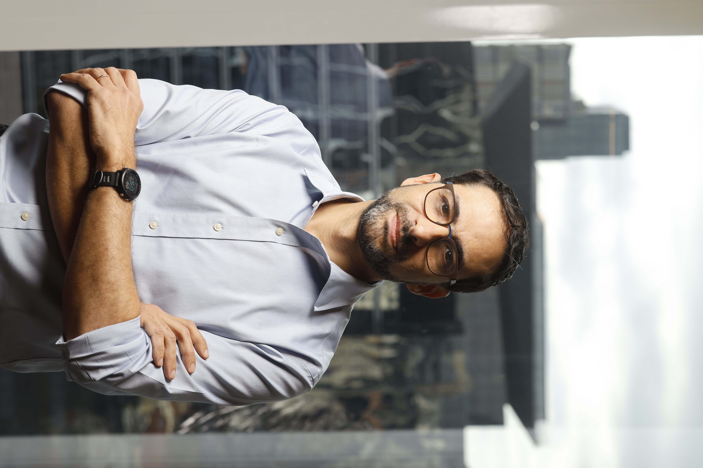

Sou um especialista em políticas educacionais, com larga experiência como gestor de organizações públicas e privadas, pesquisador e consultor. Possuo Mestrado e Doutorado em Administração Pública e Governo pela EAESP-FGV, e Especialização pelo Programa de Liderança Executiva em Desenvolvimento da Primeira Infância da Universidade de Harvard com INSPER e NCPI.
Fui Diretor de Políticas Educacionais da Fundação Lemann, Diretor Executivo da Fundação Raízen, Secretário-Adjunto de Educação no Município de São Paulo, membro da carreira de Analista de Políticas Públicas e Gestão Governamental da Prefeitura de São Paulo e pesquisador-visitante na School of International and Public Affairs da Columbia University, com bolsa CAPES-Fulbright.
Atualmente desenvolvo atividades de consultoria e pesquisa em avaliações educacionais, educação profissional e tecnológica e parcerias público-privadas na educação.
Aqui você encontrará o resultado de alguns mini-projetos pessoais (como dashboards interativos da Educação Profissionalizante e do PISA) e, futuramente, também textos e artigos.
Para contato, sugiro alguma das redes abaixo.
Microdados do Censo Escolar (INEP) sobre a educação profissional técnica de nível médio, com filtros por ano, região, rede e eixo tecnológico. Dados de 2023 a 2025.
Explorar dashboard →Comparação interativa das distribuições de proficiência em matemática no PISA 2022. Selecione até 4 países e compare curvas de distribuição, médias e proporções por nível.
Explorar dashboard →